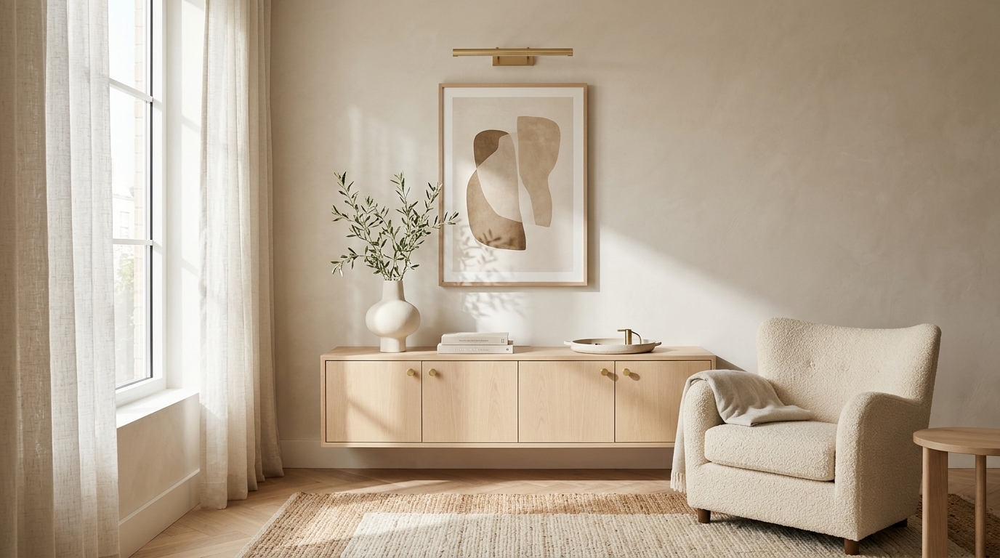
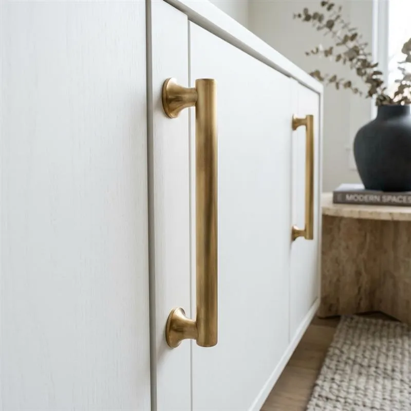
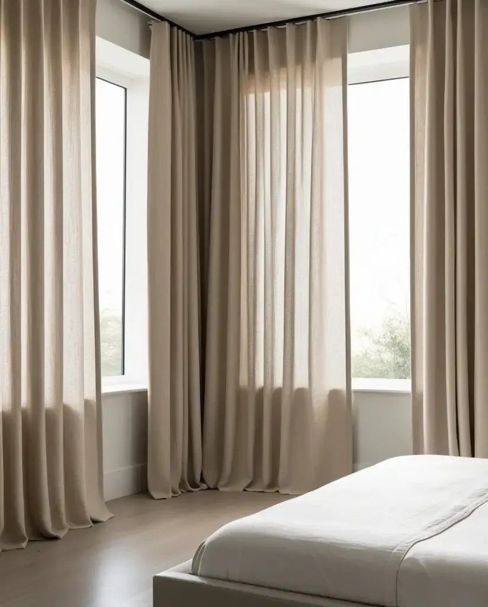
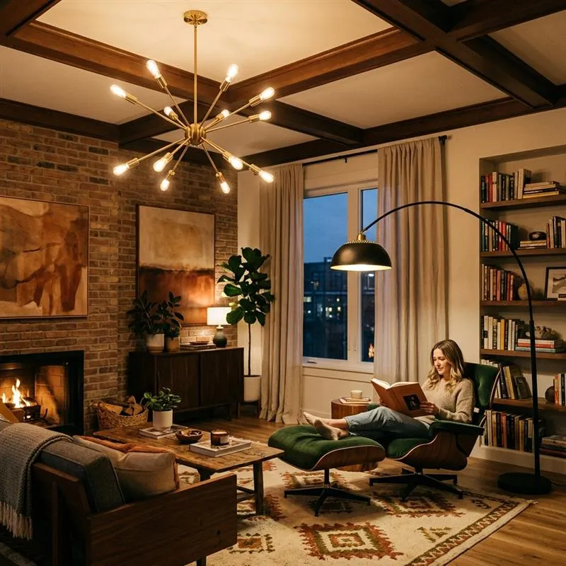
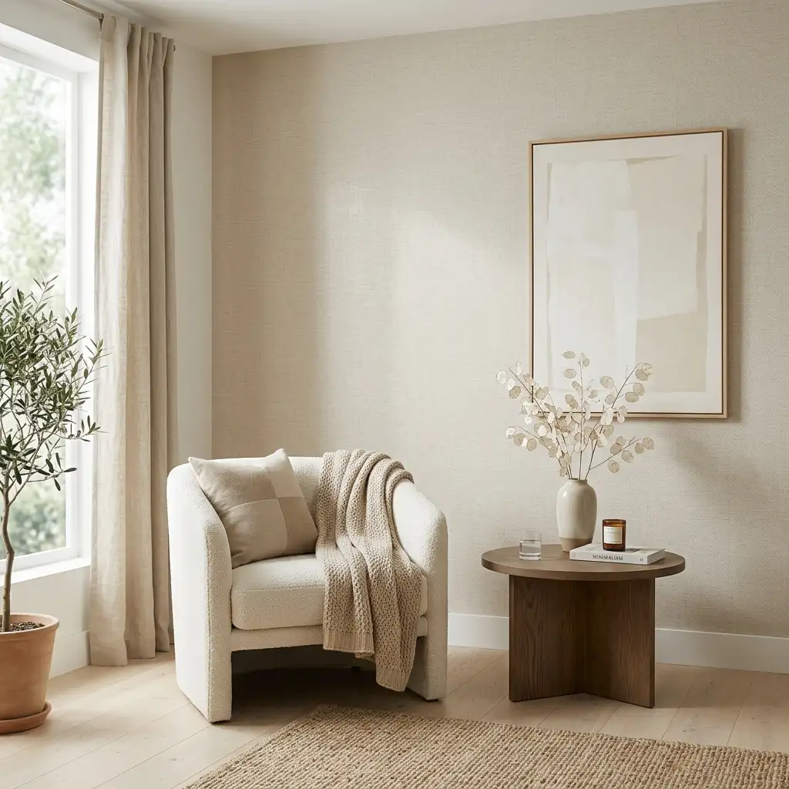
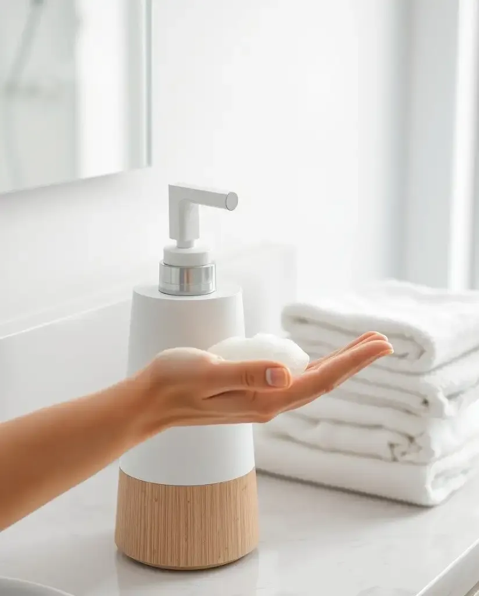
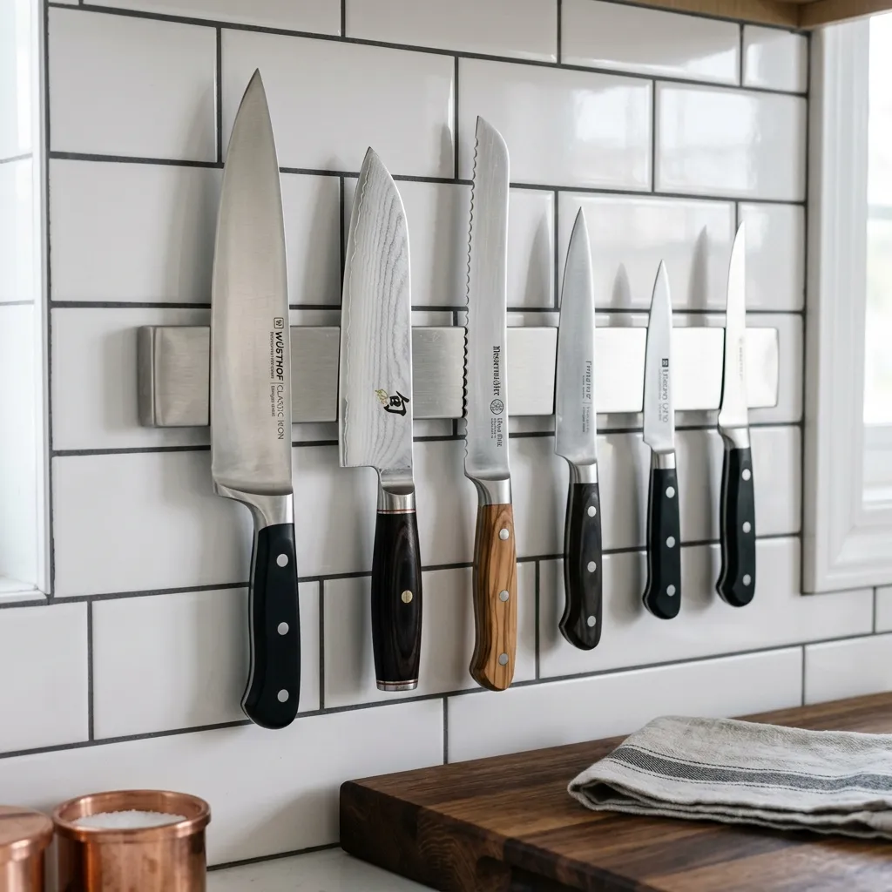
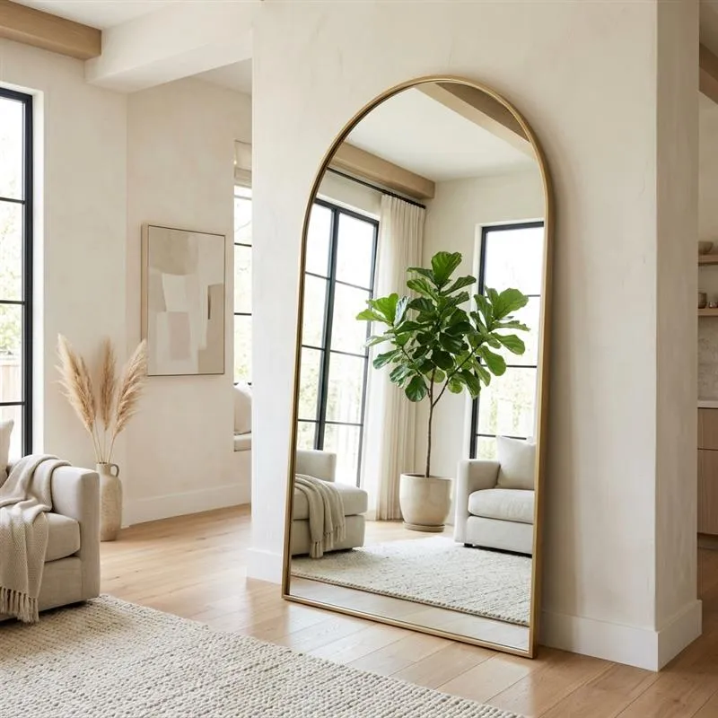
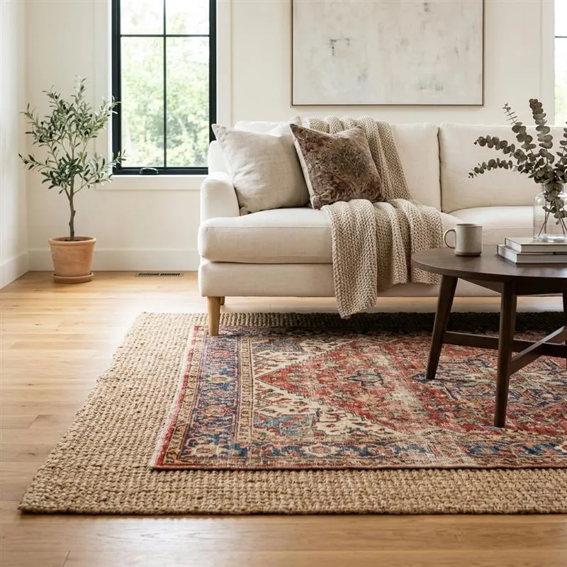
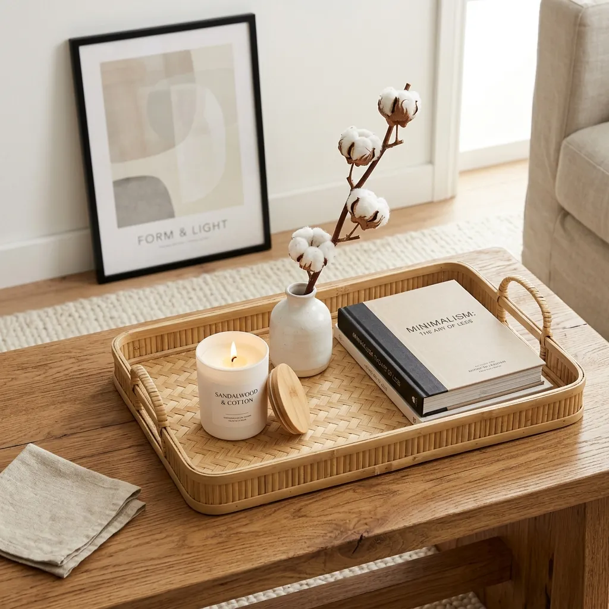

11 Renter-Friendly Minimalist Apartment Upgrades Under $50 (Without Losing Your Security Deposit)
If you have ever signed a lease, walked into your freshly cleaned apartment, and sighed at the sight of harsh blue overhead ceiling lights, hollow chrome cabinet knobs, and cheap plastic vertical blinds—welcome to the universal renter experience.
For years, renters have been told to just "wait until you buy a house" before creating a calm, magazine-worthy sanctuary. I strongly disagree. Your apartment is where you spend your mornings, decompress after exhausting workdays, and recharge your mind. Living in a space that feels temporary quietly drains your peace.
The truth? You do not need permission to tear down drywall or spend $5,000 on custom renovations. With a few thoughtful, renter-friendly minimalist apartment upgrades under $50—requiring zero power drills and leaving zero damage behind—you can turn any builder-grade rental into an airy, architectural retreat and still walk away with 100% of your security deposit on move-out day.

How Can You Make a Rental Apartment Look Minimalist & Expensive Under $50?
Focus on the five "sensory touchpoints" your eye and hands notice first: replace harsh cool-white bulbs with 2700K warm LEDs ($15), swap hollow cabinet pulls for solid brushed brass knobs ($28), mount no-drill sheer linen curtain brackets ($35), add rechargeable cordless picture lights ($32), and decant visual clutter into matte ceramic soap and pantry vessels ($25). Every item is 100% reversible in under 20 minutes.
First: My Golden "Move-Out Ziploc Rule"
Before you unscrew a single cabinet knob or swap a showerhead, grab one gallon-sized Ziploc bag and a black marker. Label it "LANDLORD ORIGINALS" and place it on the top shelf of your hallway closet. Every time you swap a builder-grade item (knobs, screws, showerhead, toilet paper holder), drop the original piece straight into that bag. When your lease ends, you won't panic looking for missing screws—you simply swap everything back in 15 minutes and take your upgraded designer pieces to your next home.
At-a-Glance: 11 No-Drill Upgrades Under $50
| Upgrade | Avg. Cost | Time | Drilling Needed? |
|---|---|---|---|
| 1. 2700K Warm Ambient Bulb Swap | $12 – $20 | 5 mins | None |
| 2. Solid Brushed Brass Cabinet Knobs | $24 – $42 | 15 mins | None (uses existing holes) |
| 3. No-Drill Tap-In Curtain Rod Brackets | $18 – $45 | 10 mins | None |
| 4. Rechargeable Cordless Picture Light | $28 – $45 | 5 mins | None (adhesive strips) |
| 5. Woven Linen Peel-and-Stick Accent | $32 – $48 | 45 mins | None |
| 6. Spa-Grade Matte Ceramic Dispensers | $20 – $30 | 5 mins | None |
| 7. Adhesive Magnetic Kitchen Wall Strip | $18 – $28 | 10 mins | None |
| 8. Oversized Leaning Mirror Placement | $40 – $50 | 2 mins | None |
| 9. Paintable Cord Channels & Cable Box | $15 – $25 | 15 mins | None |
| 10. Flatweave Rug Over Rental Carpet | $38 – $50 | 5 mins | None |
| 11. Travertine Tray & Ceramic Styling | $22 – $38 | 5 mins | None |
Swap Every Harsh Overhead Bulb to 2700K Warm White
Before you buy a single throw pillow, look up at your ceiling. Landlords almost always buy bulk 5000K "daylight" LED bulbs because they are cheap. The problem? 5000K light casts a clinical, hospital-like blue glare that makes even expensive linen furniture look flat and lifeless.
Replacing every bulb in your living room, bedroom, and kitchen with 2700K warm soft-white bulbs (ideally dimmable smart bulbs) is the single highest-ROI change in interior design. Instantly, stark rental walls take on a warm creamy glow, wood grain looks richer, and evening relaxation feels natural.

ELENA'S STYLIST TRICK: KILL THE "BIG LIGHT"
Pair your warm bulbs with a $20 pleated paper floor lamp or table lamp. Once the sun sets, turn off the overhead rental flush-mount entirely and rely on low-level ambient pools of light—a core principle of our Warm Minimalist Scandinavian Living Room Guide.
Replace Hollow Cabinet Knobs with Heavy Brushed Brass
Nothing screams "cheap rental" faster than lightweight, hollow chrome knobs that rattle every time you open a kitchen drawer. Because cabinet hardware uses standard single-screw or 3-inch center-to-center holes, swapping them requires zero drilling—just a basic Phillips screwdriver.

Choose matte satin brass, unlacquered brushed brass, or matte black knurled pulls. As we detail in our guide on Quiet Luxury Interior Design, the physical weight of solid metal hardware in your hand subconsciously signals custom craftsmanship every single morning when you make coffee.
Hide Vertical Vinyl Blinds with No-Drill Sheer Linen Curtains
Plastic vertical blinds are the ultimate enemy of a soft, serene apartment. Yet many renters skip curtains because they are terrified of drilling drywall anchors into the wall around the window frame.

The Zero-Drill Solution:
- No-Drill Blind Track Brackets ($18): These clever metal brackets clamp directly onto the existing metal headrail of your rental blinds using a tiny thumbscrew—no holes in the wall at all.
- Sheer Unbleached Linen Panels ($25–$30): Slide sheer cream or oatmeal linen drapes onto a slim matte black or brass rod. Open your plastic blinds completely to the sides and let the linen fabric cascade down to kiss the floor, diffusing sunlight like a boutique hotel.
Mount Rechargeable Cordless Picture Lights & Wall Sconces
In architectural magazines, wall sconces and brass picture lights above framed artwork create that unmistakable gallery mood. In a rental, paying an electrician to hardwire sconces into the wall is completely out of the question.

The 2026 renter secret? USB-C rechargeable magnetic picture lights and the famous "puck light trick." Modern cordless picture lights weigh less than a pound, attach securely with heavy-duty removable picture hanging strips, and come with a remote dimmer. When the battery runs low after 30–40 hours, the light bar simply snaps off its magnetic mount to recharge via USB.
Add Architectural Depth with Woven Peel-and-Stick Texture
Skip busy floral prints or fake brick patterns, which can feel dated quickly. Instead, look for matte woven grasscloth or subtle plaster-texture peel-and-stick wallpaper in warm oatmeal, sand, or linen beige.

WHERE ONE ROLL MAKES THE BIGGEST IMPACT
You don't need to paper an entire living room (which gets expensive fast). One single roll under $45 is enough to line the back wall of a recessed entryway nook, the inside back panels of a cheap IKEA Billy bookcase, or the single focal wall behind your headboard.
Eliminate Visual Noise with Matte Ceramic Bathroom Dispensers
Rental bathrooms often have cramped pedestal sinks or narrow vanity ledges. When you line those ledges with bright neon plastic shampoo bottles, brand-label dish soap, and mismatched toothbrushes, the bathroom feels half its actual size.

Decanting your daily hand soap, dish soap, shampoo, and conditioner into a matching set of amber glass or matte stoneware pump bottles instantly erases visual clutter. Pair them with a small waffle-weave hand towel, and your builder-grade rental bathroom transforms into a calming minimalist spa. Need more tiny-bathroom ideas? Check out our full guide on How to Organize a Small Bathroom Like a Luxury Spa.
Clear Kitchen Counters with No-Drill Magnetic & Over-Door Storage
Small apartment kitchens rarely give you enough prep space. Bulky wooden knife blocks, countertop paper towel stands, and freestanding spice carousels swallow up 40% of your usable counter surface.

- Adhesive Walnut/Bamboo Magnetic Knife Strip: Mounts cleanly onto tile backsplashes with heavy-duty VHB mounting tape, freeing up an entire corner of counter space.
- Over-Cabinet Door Wire Caddies: Hang over lower cabinet doors with padded hooks to store cutting boards and foil boxes completely out of sight. (Explore 7 more space-doubling ideas in our Small Kitchen Cabinet Storage Hacks guide.)
Double Natural Daylight by Leaning a Minimalist Mirror
Renters often hesitate to hang heavy wall mirrors because they require heavy-duty toggle bolts drilled straight into wall studs. Here is a classic interior designer secret: leaning a mirror deliberately looks even more chic and effortless than hanging one.

Place a thin-framed arched mirror either directly on the floor in a bright corner or resting casually on top of your dresser or entryway console, positioned directly across from a window. It acts like a second architectural window, bouncing daylight into dark apartment corners with zero nail holes. (Use a thin rubber furniture gripper strip under the base edge so it never slips on hardwood.)
Erase Cable Chaos with Paintable Cord Channels & Router Boxes
You can style the most breathtaking sofa and art wall in the world, but a tangled black nest of Wi-Fi router cords, power strips, and TV cables hanging down a white wall will ruin the minimalist calm in two seconds.
THE 15-MINUTE WIRE VANISHING ACT
Spend $18 on two items: a matte white or bamboo cable management box to conceal your entire surge protector and excess charger wires on the floor, and a pack of peel-and-stick flat cord raceways that run cleanly along the top edge of your baseboard. Tucking cables out of view gives any rental an instant custom-built polish.
Disguise Dated Rental Carpet with a Textured Flatweave Rug
Many apartments come saddled with tired, flat beige wall-to-wall carpeting that you obviously cannot rip up. The secret to making carpet disappear visually is strategic scale and texture contrast.

Layer a crisp, structured jute, cotton flatweave, or geometric cream wool-blend rug directly over the rental carpet. Always anchor the front legs of your sofa and accent chair onto the rug to define a crisp architectural seating zone—and slip a thin carpet-to-carpet grip pad underneath so the edges stay crisp and wrinkle-free.
Anchor Everyday Drop Zones with Travertine & Matte Stoneware
Keys, sunglasses, lip balm, and mail scattered loose on a countertop instantly create mental friction. Rather than fighting your daily habits, give those everyday objects a deliberate architectural "landing pad."

A real honed travertine stone tray or ribbed ceramic catchall bowl costs under $30, weighs next to nothing to move when your lease ends, and groups small items together so they read as an intentional vignette instead of clutter. For even more curated, budget-friendly room pieces, browse our reader-favorite list of 10 Affordable Minimalist Decor Pieces Under $50.

Frequently Asked Questions
How can I make my rental apartment look minimalist and expensive under $50?
The highest-impact minimalist upgrades under $50 for renters are swapping cool overhead bulbs for warm 2700K LEDs, installing solid brushed brass cabinet knobs (while saving the originals), hanging floor-to-ceiling sheer linen curtains with no-drill brackets, adding rechargeable cordless picture lights, and decanting bathroom and kitchen soaps into matte ceramic dispensers.
How do you add wall lighting to a rental without hardwiring or drilling?
Use USB-C rechargeable LED wall sconces or cordless brass picture lights mounted with heavy-duty removable picture hanging strips. Alternatively, hang a lightweight plug-in sconce and disguise the cord neatly using a slim paintable adhesive cord channel.
Can you put a minimalist rug over ugly rental apartment carpet?
Yes! Layering a structured flatweave wool, cotton, or textured jute rug over builder-grade beige rental carpet immediately anchors the seating area and hides dated flooring. Always slip a thin carpet-to-carpet non-slip rug pad underneath so the rug stays flat and never wrinkles.
What are the best affordable minimalist decor pieces for small rentals?
Focus on dual-purpose and high-texture affordable room pieces: honed travertine catchall trays, matte ceramic sculptural vases, oversized leaning mirrors that bounce daylight, washable linen throw pillow covers, and adhesive cord organizers.
Will peel-and-stick wallpaper or cabinet hardware swaps cost me my security deposit?
No, provided you follow two rules: choose woven fabric peel-and-stick wallpaper (which peels off cleanly without tearing flat drywall paint) and store every original landlord knob, screw, and showerhead in a labeled Ziploc bag so you can reinstall them in 20 minutes before move-out inspection.